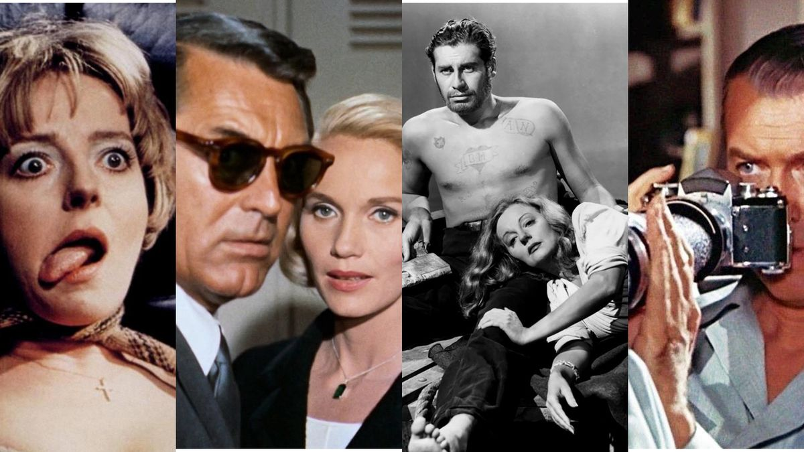
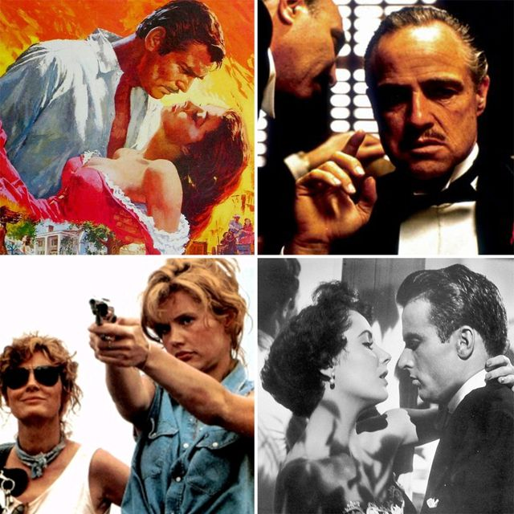
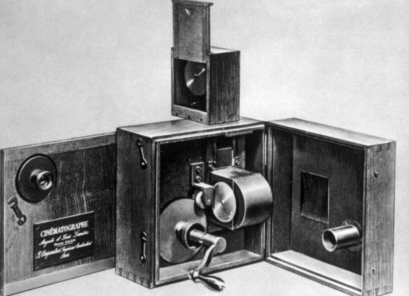

El cine ha evolucionado a lo largo de los años, desde sus inicios hasta la actualidad. Surgió a fines del siglo XIX y se caracterizó por la ausencia de diálogos sincronizados con las imágenes. Pioneros como Georges Méliès y los hermanos Lumière dejaron su huella. Las películas mudas a menudo contaban con acompañamiento musical en vivo para mejorar la experiencia del espectador.
La Época Dorada de Hollywood, que abarcó desde los años 1920 hasta los años 1960, fue testigo de la consolidación de estudios cinematográficos como Warner Bros., MGM y Paramount. Se produjeron clásicos atemporales, y surgieron estrellas icónicas como Charlie Chaplin y Marilyn Monroe.
En los años 50 y 60, surgió la Nueva Ola del Cine Europeo, un movimiento cinematográfico que desafió las convenciones tradicionales. Directores como François Truffaut y Jean-Luc Godard exploraron nuevas formas de narrativa y estilo cinematográfico.
En las últimas décadas del siglo XX, el cine independiente ganó relevancia. Películas de bajo presupuesto, a menudo realizadas fuera del sistema de estudios convencional, como "Clerks" de Kevin Smith, demostraron que las historias poderosas podían contarse sin grandes presupuestos.
Con la llegada de la era digital, el cine experimentó cambios significativos en la producción y distribución. Las películas de superhéroes se volvieron populares, y la diversidad en el cine se convirtió en un tema importante. Plataformas de transmisión como Netflix han transformado la forma en que consumimos películas.
